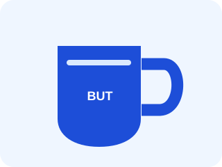

Mug BUT
Une tasse de démonstration pour parler du Web et des CSS.
12,50 €
Informations sur le MugBUT TC Toulon · Atelier CSS · TD3
Un catalogue fictif repris de la page HTML du TD2. Il ne permet aucun achat réel.
Découvrir · comparer · diagnostiquer
Prix fictifs : aucune commande n'est enregistrée.

Une tasse de démonstration pour parler du Web et des CSS.
12,50 €
Informations sur le MugUn support fictif pour distinguer contenu et mise en forme.
25,00 €
Informations sur le T-shirtUne occasion de relier les outils du cours.
15,00 €
Informations sur le sacAu TD2, vous modifiiez surtout la structure HTML et les textes. Au TD3, le contenu de cette page doit rester stable : vous intervenez sur css/boutique.css et vérifiez les effets dans le navigateur.
La frise Une brève histoire du Web prolonge l'activité avec une autre organisation des éléments.